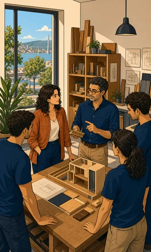
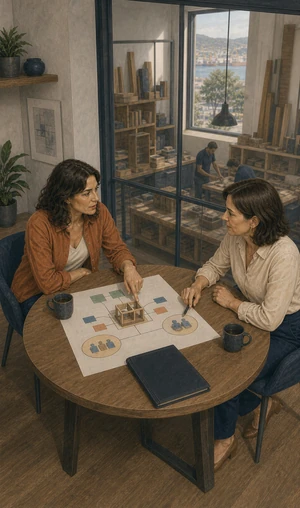
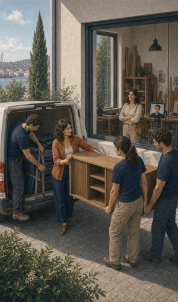
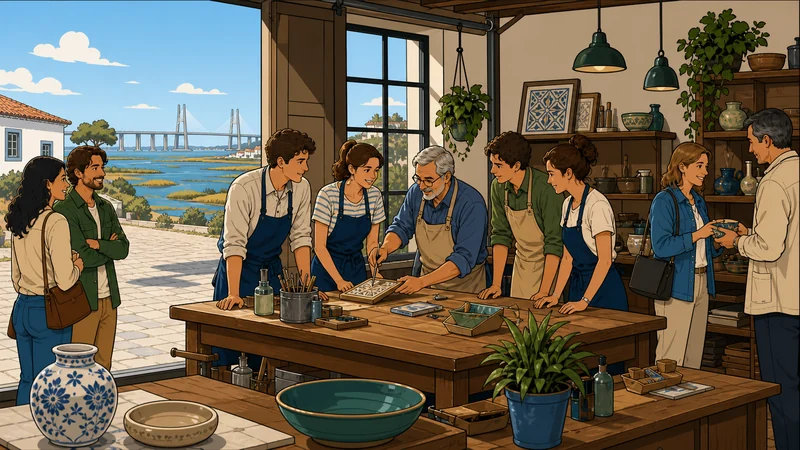

Vida
para empresas.
Não é uma pergunta agradável, mas decide se a empresa continua. Há soluções de vida pensadas para o negócio, não para a família.
O que pode incluir
Proteger a empresa,
não só a família.
O seguro de vida de que toda a gente fala protege quem fica em casa. Este protege a empresa de perder um sócio, um gerente ou alguém de quem o negócio depende.
A estrutura muda conforme o beneficiário seja a sociedade, os sócios ou a família de cada um. É a primeira decisão, e condiciona todas as outras.



Antes de assinar
O que convém
perguntar.
São os pontos que mudam de solução para solução, e que vemos consigo antes de haver proposta.
Quem é o beneficiário
A empresa, os sócios ou a família de cada pessoa segura. É a decisão que muda tudo o resto.
Capital por pessoa
Depende do papel de cada um no negócio, do passivo e do que a empresa perde se faltar.
Questionário e exames
Podem ser exigidos consoante a idade e o capital. Confirmam-se antes de avançar.
Enquadramento fiscal
Depende da estrutura escolhida e da situação concreta da empresa. Confirme com o contabilista certificado antes de contar com qualquer benefício.
Entradas e saídas
O que acontece quando alguém entra ou sai da empresa deve estar previsto à partida.
Para quem
Sociedade com dois ou três sócios
Se um faltar, a quota segue para os herdeiros. Há soluções que dão aos restantes meios para a adquirir, sem pôr a empresa em causa.
Empresa com crédito ao investimento
O passivo não desaparece com a pessoa que o assumiu. Um capital dimensionado à dívida evita que o negócio pague por isso duas vezes.
Negócio dependente de uma pessoa
Há empresas em que o conhecimento, a carteira ou a licença estão numa cabeça só. É esse risco que a solução de homem-chave trata.
Informação resumida e de caráter geral. As condições que valem são as da informação pré-contratual e contratual do produto proposto.
Quem define coberturas, capitais e exclusões é a companhia. Veja a página oficial do produto e traga-nos as dúvidas.

A empresa continua
sem uma das pessoas?
Ligue e diga quantos sócios são, que passivo existe e de quem o negócio depende. A partir daí desenhamos as opções.
Sem compromisso. Não usamos os seus dados para mais nada.